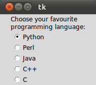

Tkinter
Radio Buttons
A radio button, sometimes called option button, is a graphical user interface element of Tkinter, which allows the user to choose (exactly) one of a predefined set of options. Radio buttons can contain text or images. The button can only display text in a single font. A Python function or method can be associated with a radio button. This function or method will be called, if you press this radio button.
Radio buttons are named after the physical buttons used on old radios to select wave bands or preset radio stations. If such a button was pressed, other buttons would pop out, leaving the pressed button the only pushed in button.
Each group of Radio button widgets has to be associated with the same variable. Pushing a button changes the value of this variable to a predefined certain value.
Simple Example With Radio Buttons
from Tkinter import *
root = Tk()
v = IntVar()
Label(root,
text="""Choose a
programming language:""",
justify = LEFT,
padx = 20).pack()
Radiobutton(root,
text="Python",
padx = 20,
variable=v,
value=1).pack(anchor=W)
Radiobutton(root,
text="Perl",
padx = 20,
variable=v,
value=2).pack(anchor=W)
mainloop()
The result of the previous example looks like this:

Improving the Example
In many cases, there are more than two radio buttons. It would be cumbersome, if we have to define and write down each button. The solution is shown in the following example. We have a list "languages", which contains the button texts and the corresponding values. We can use a for loop to create all the radio buttons.
from Tkinter import *
root = Tk()
v = IntVar()
v.set(1) # initializing the choice, i.e. Python
languages = [
("Python",1),
("Perl",2),
("Java",3),
("C++",4),
("C",5)
]
def ShowChoice():
print v.get()
Label(root,
text="""Choose your favourite
programming language:""",
justify = LEFT,
padx = 20).pack()
for txt, val in languages:
Radiobutton(root,
text=txt,
padx = 20,
variable=v,
command=ShowChoice,
value=val).pack(anchor=W)
mainloop()
The result of the previous example looks like this:

Indicator
Instead of having radio buttons with circular holes containing white space, we can have radio buttons with the complete text in a box. We can do this by setting the indicatoron option to 0, which means, that there will be no separate radio button indicator.We exchange the definition of the Radiobutton in the previous example with the following one:
Radiobutton(root,
text=txt,
indicatoron = 0,
width = 20,
padx = 20,
variable=v,
command=ShowChoice,
value=val).pack(anchor=W)
We have added the option indicatoron and the option width.